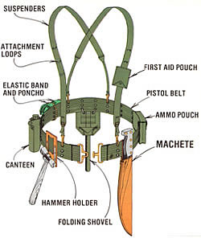
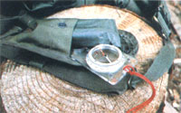
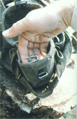

Got too few hands to carry homestead gear? Let the U.S. Army solve your problem with . . .
When my mate Gayle and I moved our family out to our Oregon homestead, we discovered that some of the fences on the property hadn't been tended for more than ten years , so the underbrush along those borders had grown completely out of control. Well, I knew that walking the fenceline to make repairs (it's a two-mile hike around the perimeter!) would be tough going, and that - since I'd be clearing brush and mending boundaries - I'd need a variety of tools to get the job done. But I didn't know how to manage this task without having to run back to the house every time I wanted a different implement.
"What I need," I decided, "is something that will let me carry everything the job requires, yet leave my hands free to actually do the work." After cogitating awhile, I realized that soldiers in the field face exactly the same problem . . . and that revelation led me to my local army surplus store where - sure enough - I discovered the perfect solution.
BUCKLE UP
The apparatus I found at the shop is known among military types as "LBE" (load-bearing equipment) or "web gear" . . . and its basic components are a pistol belt, from which you can hang a variety of tools and carrying pouches, and a pair of heavy-duty suspenders to help hold the whole assortment up.
The outfit distributes the weight of the attached paraphernalia (it's supported at my waist and both shoulders) and moves easily with me . . . so wearing it for hours on end isn't uncomfortable or tiring. And because both my hands are left free, I can use them to lug any heavy major tools (such as an axe, a sledgehammer, or a chain saw) that I might need on a given day. What's more, my fence-mending belt system - including canteen, machete, and folding shovel - cost me about $35!
COMPONENTS
Here's a breakdown of the main elements that make up my tool-toter . . . and some observations that I hope can help you put together an equally economical and efficient setup.
Pistol belt. The basic design of this particular piece of military apparel hasn't changed significantly since World War I days. It's simply a wide waistband perforated all around with metal eyelets that accommodate various hardware-holding hooks or brackets. Belt prices range from around $3.00 for a well-used, cotton-web version to $5.00 for imported copies (such as the made-in-Taiwan model I bought) . . . and up to $10 for a modern U.S.-issue green nylon one with a quick-release buckle.
Suspenders. Over the years both the Army and the Marine Corps have produced these belt supporters in a number of different styles. The ones I purchased - for a measly $1.98 - appear to be made of cotton, and are stamped "U.S." and "1948" in black ink. (The same store offered a new green nylon pair for a whopping $12!)
Canteens. There are two kinds: military-issue plastic water holders (currently priced between $1.00 and $2.00 apiece) and an aluminum version (which costs from $2.50 to $4.00). A heavy cotton carrying pouch for one canteen costs $2.00 to $4.00 (depending, of course, on the item's age and condition).
Folding shovel. In the service it's officially referred to as an "entrenching tool" . . . but I just call the little digger useful . It's eminently portable and has a blade that can be locked in either shovel or pick position. Mine is an old-style model, with a folding wooden handle, that was already beat up when I bought it for $2.00 (you can pay as much as $4.00 for one in better shape). The cloth holster for my tool is in mint condition and cost $1.50.
The military stopped using the classic wooden-handled shovel 10 or 12 years ago and replaced it with an all-metal version (current price: $8.50) that folds at two points and fits entirely inside an inexpensive plastic carrying case. This new design is a big improvement, because the old model's wooden shaft tends to smack you in the back of the legs every time you take a step. You can also buy civilian -made copies of the new shovel, by the way . . . they're manufactured of much lighter-gauge steel and are consequently priced lower (about $5.50), but they do seem capable of withstanding hard use.
Machete. If you need one of these oversized knives for cutting brush and such, take my advice and buy the very finest you can afford. (I bought the cheapest one I could find . . . and after a year's use the blade is badly dinged and its plastic handle is cracked.) You can expect to pay around $12 for a machete like mine and at least twice that amount for a really good one.
Ammo pouches. Surplus stores usually carry lots of these canvas pockets in a wide variety of shapes, sizes, and prices (from a buck to a sawbuck). One or two should be sufficient for carrying nails and fence-wire staples. If you want to, you can purchase a larger one as well . . . for packing along a couple of sandwiches.
First aid pouches. These little fabric pockets have snap-down flaps and slip right onto loops on my front suspender straps. The pouches were originally designed to carry a compact field bandage, and I usually wear one of the strap pockets for that purpose and/or to carry a compass. Since they're only $1.50 each, though, I suggest that you go ahead and buy two or three . . . they can come in mighty handy.
Hammer holder. This is the only non -military item on my belt (I just couldn't find an Army version). It's basically a sturdy leather panel with a strong steel loop riveted to it . . . I just slip the carrier onto my belt and pass the handle of my hammer, fencing pliers, or whatever through the metal ring. I bought the device for under $3.00 at my local Montgomery Ward store. (Most hardware shops also carry hammer holders.)
Elastic bands. Ordnance officers refer to these as "blousing straps" or "boot bands" (soldiers use them to hold the bottoms of their trousers to their boots). The straps have a small metal hook at each end and stretch to more than twice their seven-inch length . . . which makes them very handy for securing rolled-up bulky items (such as my poncho, a must here in Oregon) to my belt. At 50 cents a pair, they're a real bargain.
OTHER USES
The real beauty of this load-bearing equipment is that it allows you to customize the rig to suit a particular job by simply selecting the most appropriate components for the task at hand. The accessories I've listed go together to make an ideal fence-mending outfit . . . but I can easily change to different kinds of holders to accommodate the gear needed for other work. If I'm going out to cut firewood, for example, I can take the hammer and shovel off my belt, and add a large pouch or two for carrying a bar wrench and extra saw chains.
There are lots of other web-gear accessories available, too, such as larger first aid kits, sleeping-bag carriers, and even small knapsacks, known as a "fanny packs". One young lad who works around our farm uses these items with his LBE when he goes camping, and he says the rig is much more comfortable than conventional equipment.
I hope you'll give the outfit a try. It's a great way to lighten your load . . . and - if you're like me - you'll feel good about converting military hardware into instruments for more peaceful purposes. In fact, whenever I wear my tool-toter, I think of the Biblical passage from the book of Isaiah: " They shall beat their swords into plowshares, And their spears into pruning hooks . . . . "
Not a bad idea, eh?
|
 |
 |
 |